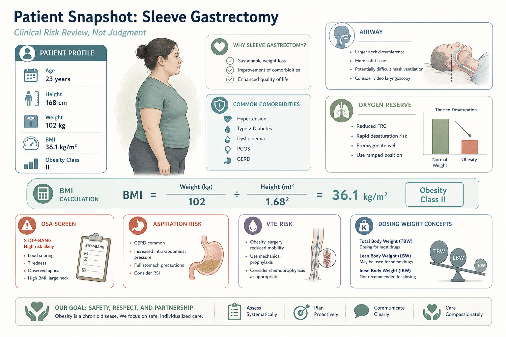
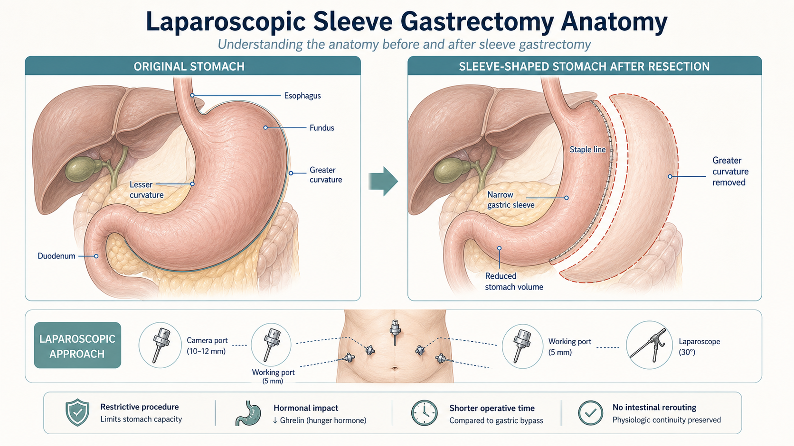
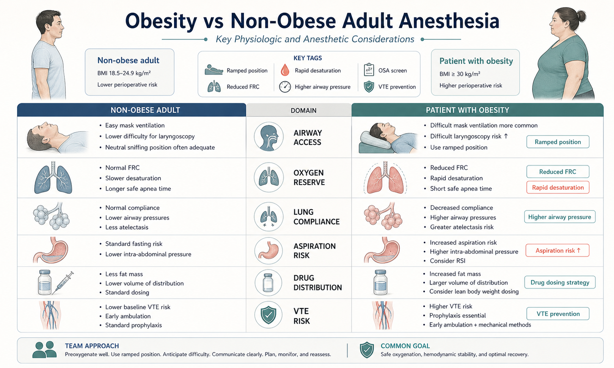
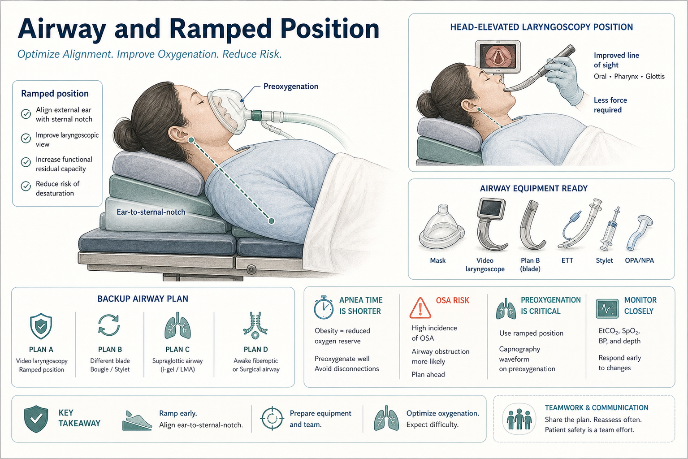
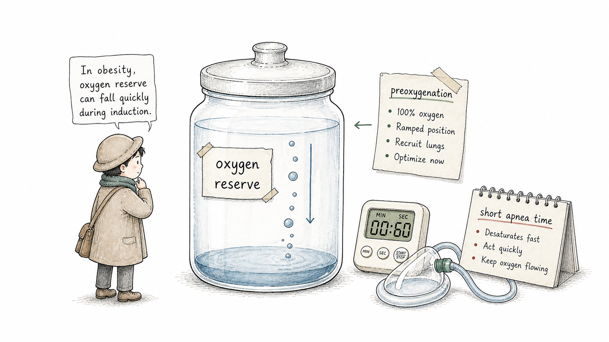
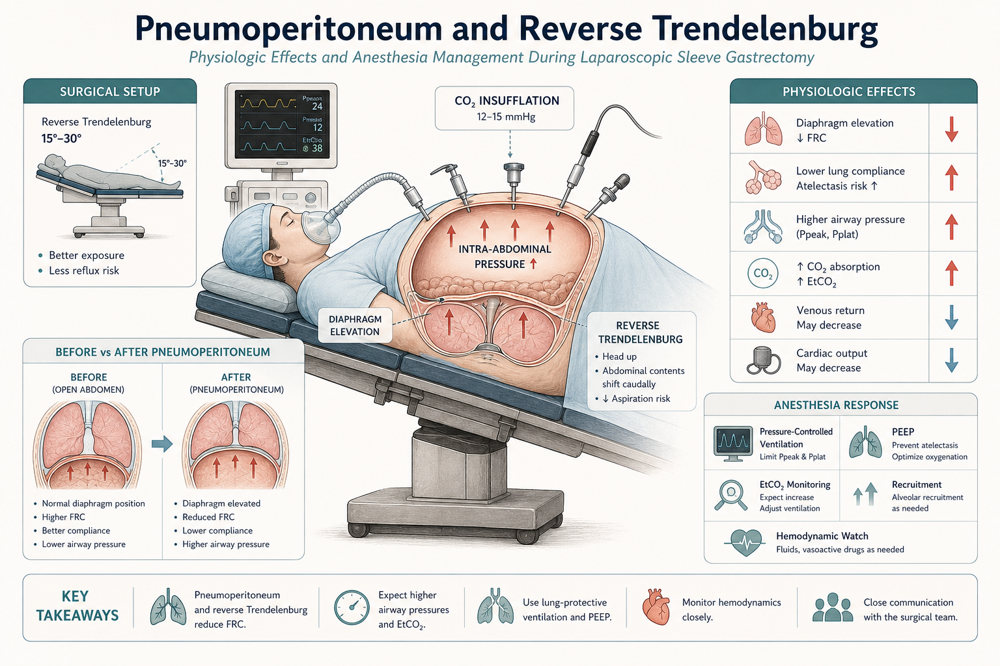
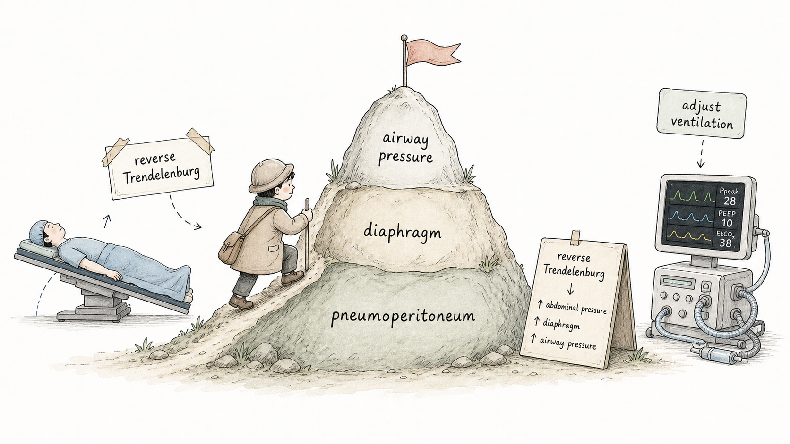
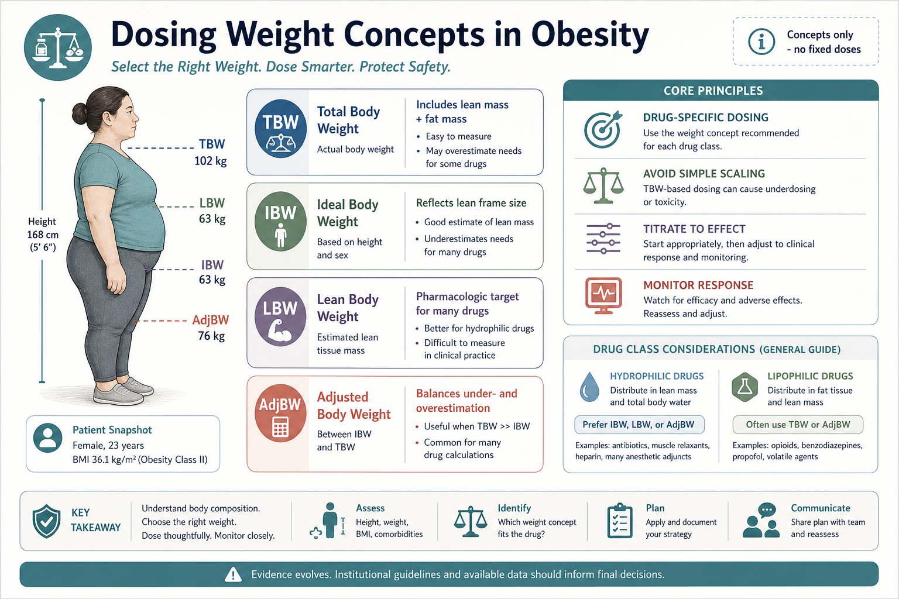
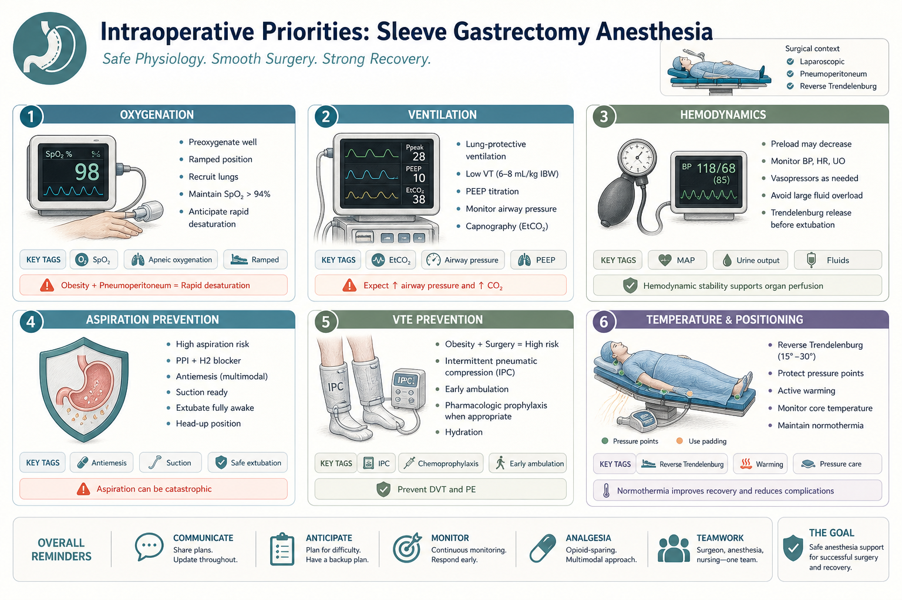
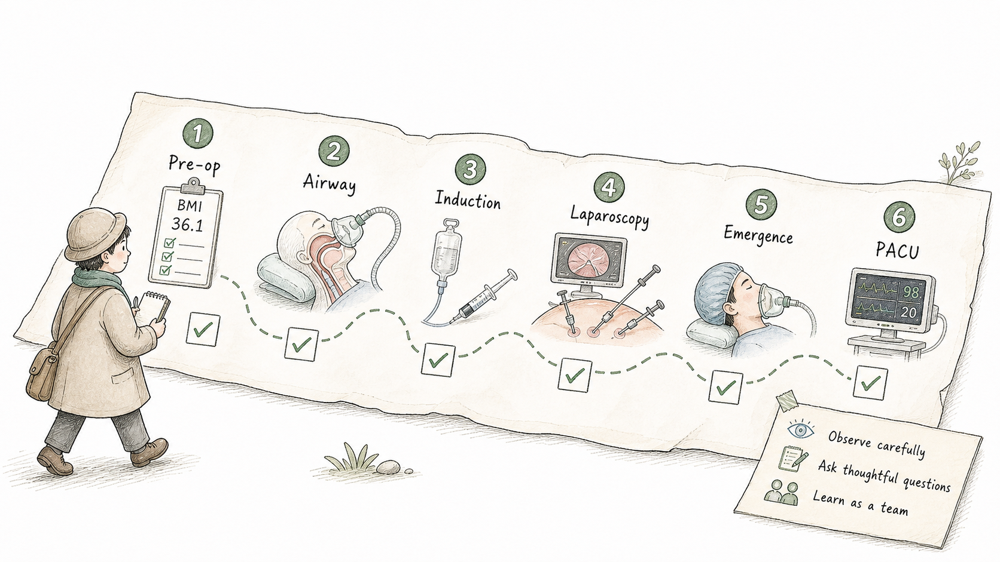

Start Here
减重手术麻醉的第一句话：不是“体重更大”，而是生理储备和操作条件不同First Principle: It Is Not Just Higher Weight; Physiology and Working Conditions Change
腹腔镜袖状胃切除术通常是择期手术，但麻醉并不简单。肥胖会影响气道、预氧合、肺顺应性、药物分布、反流误吸风险、静脉血栓风险和术后呼吸恢复。学生要学会把“体重数字”转化成麻醉思维。
Laparoscopic sleeve gastrectomy is often elective, but anesthesia is not simple. Obesity affects airway management, preoxygenation, lung compliance, drug distribution, reflux and aspiration risk, venous thromboembolism risk, and post-op respiratory recovery. The student should learn how a weight number becomes anesthesia reasoning.
Patient Snapshot
病例快照：23 岁女性，BMI 36.1 kg/m²Patient Snapshot: 23-Year-Old Female, BMI 36.1 kg/m²
本病例的身高 168 cm、体重 102 kg，BMI 约为 36.1 kg/m²。对学生来说，BMI 不是评价人的标签，而是提醒麻醉医生重新评估氧储备、气道、OSA 风险、反流误吸风险、药物体重概念和血栓预防。
For this patient, height is 168 cm and weight is 102 kg, giving a BMI of about 36.1 kg/m². For the learner, BMI is not a label for judgment; it is a cue to reassess oxygen reserve, airway, OSA risk, reflux and aspiration risk, dosing-weight concepts, and VTE prevention.

Surgery Anatomy
袖状胃切除术做什么：把胃变成较窄的管状结构What Sleeve Gastrectomy Does: A Narrower Sleeve-Shaped Stomach
腹腔镜袖状胃切除术通常沿胃大弯切除一部分胃，保留较窄的袖状胃管。麻醉学生不需要掌握外科技术细节，但要理解：这是腹腔镜上腹部手术，会涉及气腹、体位变化、胃食管反流和术后恶心呕吐预防。
Laparoscopic sleeve gastrectomy removes part of the stomach along the greater curvature, leaving a narrower sleeve-shaped stomach. The anesthesia learner does not need surgical technical details, but should understand that this is upper-abdominal laparoscopy involving pneumoperitoneum, positioning, reflux concern, and PONV prevention.

What Is Different?
与普通成人麻醉相比，肥胖患者麻醉有哪些不同How Bariatric Anesthesia Differs from Routine Adult Anesthesia
这台病例的关键不是“成年女性”，而是“肥胖 + 腹腔镜上腹部手术”。肥胖患者功能残气量下降，诱导后更容易快速低氧；肺顺应性降低，气腹后气道压力可能升高；同时 OSA、反流误吸、VTE、体位压力点和术后镇痛都需要更谨慎。
The key is not simply “adult female”; it is obesity plus upper-abdominal laparoscopy. Functional residual capacity can be reduced, so desaturation may occur faster after induction. Lung compliance may be lower, and airway pressure may rise after pneumoperitoneum. OSA, reflux and aspiration, VTE, positioning pressure points, and post-op analgesia all require special attention.

Airway and Oxygenation
诱导前的关键：摆好体位，尽量把氧储备充满Before Induction: Position Well and Fill the Oxygen Reserve
肥胖患者麻醉诱导时，低氧发生可能更快。常见策略包括充分预氧合、头高位或 ramped position、准备视频喉镜和备用气道方案。学生可以观察：耳屏和胸骨切迹是否对齐？预氧合是否充分？插管前团队是否确认备用方案？
During induction, oxygen desaturation may occur faster in patients with obesity. Common strategies include thorough preoxygenation, head-elevated or ramped positioning, video laryngoscope readiness, and a backup airway plan. Observe: are the external auditory meatus and sternal notch aligned? Was preoxygenation adequate? Did the team confirm backup options before intubation?


Pneumoperitoneum and Positioning
腹腔镜气腹和反 Trendelenburg：呼吸循环都会变Pneumoperitoneum and Reverse Trendelenburg: Respiratory and Circulatory Conditions Change
腹腔镜需要二氧化碳气腹，腹压升高会推动膈肌、降低肺顺应性、增加气道压力，并影响 EtCO2。反 Trendelenburg 体位可以减轻膈肌受压、改善手术暴露，但也可能影响回心血量和血压。麻醉医生需要在通气、循环和手术视野之间持续平衡。
Laparoscopy requires CO2 pneumoperitoneum. Increased intra-abdominal pressure can shift the diaphragm, reduce lung compliance, increase airway pressure, and affect EtCO2. Reverse Trendelenburg may reduce diaphragmatic compression and improve exposure, but can also affect venous return and blood pressure. The anesthesiologist balances ventilation, circulation, and surgical exposure.


Dosing Weight Concepts
药物剂量原则：不能简单把所有药都按 102 kg 放大Dosing Principle: Do Not Simply Scale Every Drug to 102 kg
肥胖患者麻醉用药需要理解几个体重概念：实际体重 TBW、理想体重 IBW、瘦体重 LBW、校正体重 adjusted body weight。不同药物的分布、清除和效应不同，因此应根据药物特性、患者反应和监测结果调整。本课件只讲原则，不提供固定剂量。
Drug dosing in obesity requires several weight concepts: total body weight (TBW), ideal body weight (IBW), lean body weight (LBW), and adjusted body weight. Different drugs distribute, clear, and act differently, so dosing should be drug-specific and titrated to patient response and monitoring. This course teaches principles only; it does not provide fixed doses.

Intraoperative Priorities
术中麻醉看什么：氧合、通气、循环、误吸、VTE、体位What Anesthesia Watches: Oxygenation, Ventilation, Hemodynamics, Aspiration, VTE, Positioning
术中关注点包括 SpO2、EtCO2、气道压力、PEEP、血压心率、体位和压力点、胃内容物和误吸风险、恶心呕吐预防、阿片节约镇痛、VTE 预防和体温管理。对学生而言，最重要的是把每个监护数字和手术步骤联系起来。
Intraoperative priorities include SpO2, EtCO2, airway pressure, PEEP, blood pressure and heart rate, position and pressure points, gastric content and aspiration risk, PONV prevention, opioid-sparing analgesia, VTE prevention, and temperature management. For the student, the most important skill is linking each monitor value with the surgical step.

Emergence and PACU
苏醒期重点：清醒拔管、氧合稳定、少阿片、少恶心Recovery Focus: Awake Extubation, Stable Oxygenation, Less Opioid, Less Nausea
减重手术后，苏醒和 PACU 观察很重要。麻醉医生关注清醒拔管、保护气道、氧合和通气稳定、疼痛控制、PONV 预防、OSA 风险、早期活动和 VTE 预防。多模式镇痛和阿片节约策略常用于减少呼吸抑制和恶心呕吐。
Emergence and PACU monitoring matter after bariatric surgery. The anesthesiologist focuses on awake extubation, airway protection, stable oxygenation and ventilation, pain control, PONV prevention, OSA risk, early mobilization, and VTE prevention. Multimodal and opioid-sparing analgesia may reduce respiratory depression and nausea.
Student Observation Route
学生自己怎么观察：六个节点How to Observe Independently: Six Checkpoints

Check Yourself
术后五个自测问题Five Post-Case Self-Check Questions
看完病例后，用 2 分钟回答：BMI 36.1 对麻醉提示了什么？为什么 ramped position 重要？气腹后通气和循环会怎样变化？为什么药物剂量不能简单全部按实际体重放大？PACU 最需要观察什么？
After the case, answer in two minutes: What does BMI 36.1 tell anesthesia to look for? Why is ramped position important? How does pneumoperitoneum change ventilation and circulation? Why should not every drug simply be scaled to total body weight? What matters most in PACU?